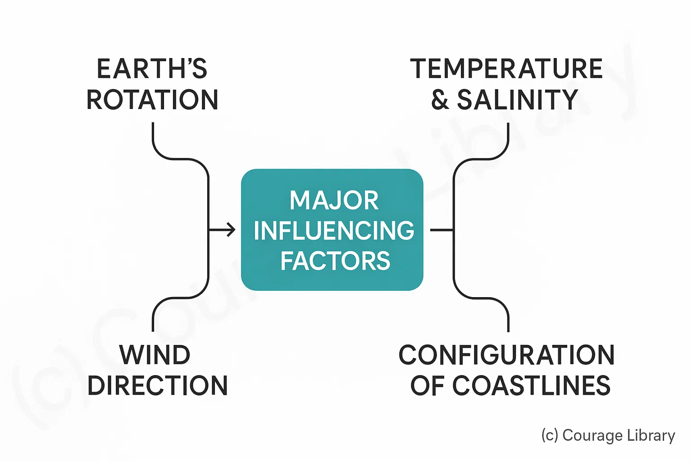

SSC CGL - Detailed Guide 2025
Self-Paced Course
Oceanography
Reference: Lucent GK, NCERT Class 6–12
Ocean Relief
Major Features of the Ocean Floor
| Feature | Description | Details/Example |
|---|---|---|
| Continental Shelf | Gently sloping, submerged edge of continent | Rich in marine life and minerals; up to 200 m deep |
| Continental Slope | Steep slope connecting shelf to deep ocean floor | Submarine canyons present |
| Abyssal Plain | Deep, flat ocean floor; between 3,000–6,000 m depth | One of the flattest, smoothest regions on Earth |
| Ocean Trenches | Deepest parts of ocean floor, formed at subduction zones | Mariana Trench (∼11,000 m, deepest point) |
| Mid-Ocean Ridges | Underwater mountain ranges due to divergent plates | Mid-Atlantic Ridge |
| Seamounts & Guyotsb | Submerged volcanic peaks; Guyots have flat tops | Seamount: Mount Submarine; Guyot: Eroded flat top |
Ocean Currents
Definition: Large masses of surface water moving in definite directions due to various factors.
Types of Currents
| Type | Temperature | Examples | Effect |
|---|---|---|---|
| Warm | Warm water from equator to poles | Gulf stream, Kuroshio, Brazil | Warms nearby land; increase rainfall |
| Cold | Cold water from poles to equator | Labrador, Humboldt (Peru), Canary | Cools nearby land; causes deserts (e.g. Atacama) |
Major Influencing Factors
- Earth’s rotation (Coriolis force)
- Wind direction
- Temperature and salinity
- Configuration of coastlines

Important Currents Table
| Ocean | Warm Currents | Cold Currents |
|---|---|---|
| Atlantic | Gulf Stream, North Atlantic Drift | Labrador, Canary |
| Pacific | Kuroshio (Japan), East Australia | Oyashio, California |
| Indian | Agulhas, Somali (SW monsoon) | West Australian |
Warm + Cold current convergence zones (e.g. Japan coast) → rich in fish (ideal for fishing industries).
Tides and Waves
Tides
Definition: Periodic rise and fall of sea level due to gravitational forces of Moon and Sun.
| Type of Tide | Cause | Occurrence |
|---|---|---|
| Neap Tide | Moon and Sun at 90° angle (1st & 3rd quarter) | Low tidal range |
| Diurnal Tide | One high and one low tide per day | Gulf of Mexico |
| Semi-diurnal Tide | Two high and two low tides per day | Most coasts (e.g. Atlantic) |
| Mixed Tide | Unequal high and low tides | Pacific Ocean (e.g. West Coast USA) |
Waves
- Formed by wind blowing over the surface of water.
- Wave Crest = top; Trough = bottom
- Tsunamis are not regular waves — caused by undersea earthquakes, landslides or volcanoes.
Coral Reefs, Tsunamis, Marine Resources
Coral Reefs
| Type | Description | Examples |
|---|---|---|
| Fringing Reef | Directly attached to the coast | Red Sea, Andaman Islands |
| Barrier Reef | Separated by a lagoon from the shore | Great Barrier Reef (Australia) |
| Atoll | Ring-shaped reef surrounding a lagoon | Maldives, Lakshadweep |
Coral reefs require warm (20–25°C), shallow, clean, saline water and sunlight.
Tsunamis
| Feature | Details |
|---|---|
| Cause | Submarine earthquakes, landslides, or volcanic eruptions |
| Speed | Up to 800 km/h in deep ocean |
| Height | Low in deep water, rises dramatically near coast |
| Affected Areas | Pacific Ring of Fire, Indian Ocean (e.g. 2004 Tsunami) |
Marine Resources
| Type | Examples | Importance |
|---|---|---|
| Biotic | Fish, algae, seaweed | Food, fuel (bio), pharmaceuticals |
| Mineral | Salt, magnesium, polymetallic nodules | Industry, metallurgy |
| Energy | Offshore oil, gas, tidal, wave energy | Non-renewable & renewable energy |
Start Your SSC CGL Journey Now!
Join Courage Library to experience disciplined study and expert support.
Be a Couragian!